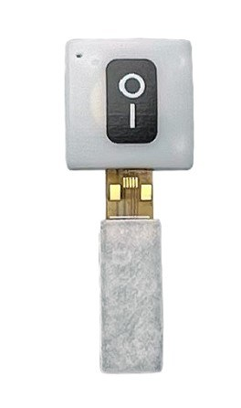

Choose your support section
Start with NeuroStrip or AAC, then follow a visual step-by-step guide. The support mascot changes with the section you are using.

Choose your section
Two clear support areas: NeuroStrip for sEMG and movement, and AAC for communication devices and access technology.

NeuroStrip
Setup, skin preparation, EMG placement, protocols, sessions, measurements, rehab, sport, dysphagia and troubleshooting.
Open NeuroStrip support →AAC
NeuroNode, EyeGaze, communication devices, Grid 3, iOS AAC, mounting and common device troubleshooting.
Open AAC support →NeuroStrip
Visual guides for sEMG setup, placement, application workflows, sessions and data review.
Choose your pathway
NeuroStrip Get Help guides
AAC Products & Access
Choose the AAC product first. Trial Card content is prioritised for simple frontline setup and support.
NodiChoose your AAC product
Common AAC Get Help
Quick fixes
Common frontline support routes.
Ask your support guide
Nero handles NeuroStrip. Nodi handles AAC, including NeuroNode, EyeGaze and communication-device support.
Contact Control Bionics Support
If the documented steps do not resolve the issue, escalate to Support.